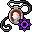

軽業師の護符 Amulet of the acrobat
英語版 CrawlWiki の記事「Amulet of the acrobat」(0.31 向け、2024-02-15 版)の翻訳です。原文の著者は編集履歴をご覧ください。
この記事は 0.31 の時点の内容で、最新の 0.34 とは違うところがあるかもしれません。
| 種類 | 装身具 |
|---|---|
| 名前 | 軽業師の護符 |
| アイコン |  |

| 移動中や待機中に限り、転がったり宙返りしたりして敵の攻撃を躱せるようにする護符だ。それ以外の行動(階段の昇降を含む)をしている間は、何の効果もない。 |
軽業師の護符を身につけると、EV が +15 と大きく上がる。ただし、移動と待機以外の行動をしなかったターンに限られる。
- 階段の昇り降りでは、EV +15 のボーナスは得られない。
- 反撃(ミノタウロスの頭突き、反撃)をするとボーナスは消える。
- ウー・ジアンの武術の攻撃をするとボーナスは消える。
- 詠唱を続ける呪文(焼灼の光線など)を維持していても、ボーナスは消えない。
天狗は最初から軽業の性質を持っているので、この護符の恩恵を受けない。
戦略
EV +15 はたしかに強力な効果だが、攻撃やアイテムの使用をしたときには働かないので、少し期待外れでもある。それでも使い道はいくつかある。
- 戦闘中に立ち位置を変えるのに役立つ。移動しているあいだ、セントールの射撃や機会攻撃などに対する守りになる。ケイブリアドスの信者にはとくに便利だ。
- 時間とともにダメージを与える効果と相性がいい。前に書いたとおり詠唱を続ける呪文は効果が続くし、毒や凍てつく城壁、石化のような遅れて効く効果とも組み合わせられる。
- 逃げるのに役立つ。テレポートが発動するのを待っているあいだ、守りが固くなる。ルーンを「忍者」のようにこっそり盗み出すのにも向いている。
もっと安定した恩恵がほしいなら、ほかの護符のほうがいいかもしれない。それでも、少なくとも軽業師の護符をつけているほうが、何もつけていないより確実にましだ。
小技
- この護符による EV の上昇は、条件を満たす行動をした次のターンに青で表示される。ただし、別の行動をするとすぐに消える。
- EV をまったく無視する脅威はたくさんあることを忘れずに。ファイアボールや旋風の一撃のような呪文、有害な雲、危険な呪術などだ。
変更履歴
| 装身具 | |
|---|---|
| 護符 | 軽業師 • 化学 • 散逸 • 信仰 • 守護霊 • 魔力再生 • 反射 • 再生 • 野生化 |
| 指輪 | 器用さ • 躱し身 • 飛行 • 知性 • 魔力 • 耐毒 • 生命力保護 • 護り • 耐冷 • 耐火 • 腐食阻止 • 霊視 • 殺戮 • 腕力 • 意志力 • 魔術 |